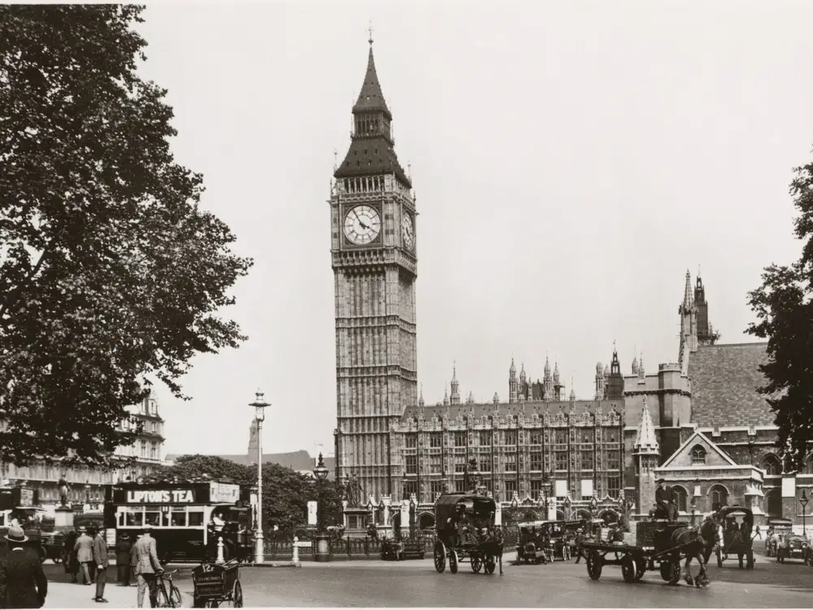

Overview
Classic cars have a charm that modern cars can't replicate. They represent an era of automotive history filled with innovation and style.
The Roaring Twenties! A time when cars weren't just vehicles; they were a statement.
Fast forward to the 50s, when style met speed. Cars became symbols of freedom and adventure.

The 60s brought power and performance. Muscle cars ruled the roads and hearts alike.

Today, these classic cars are not just vehicles. They're time capsules, taking us back to golden eras.

For many, classic cars are a bridge between generations, sharing stories of days gone by.
Classic cars: A timeless journey through history, style, and passion.